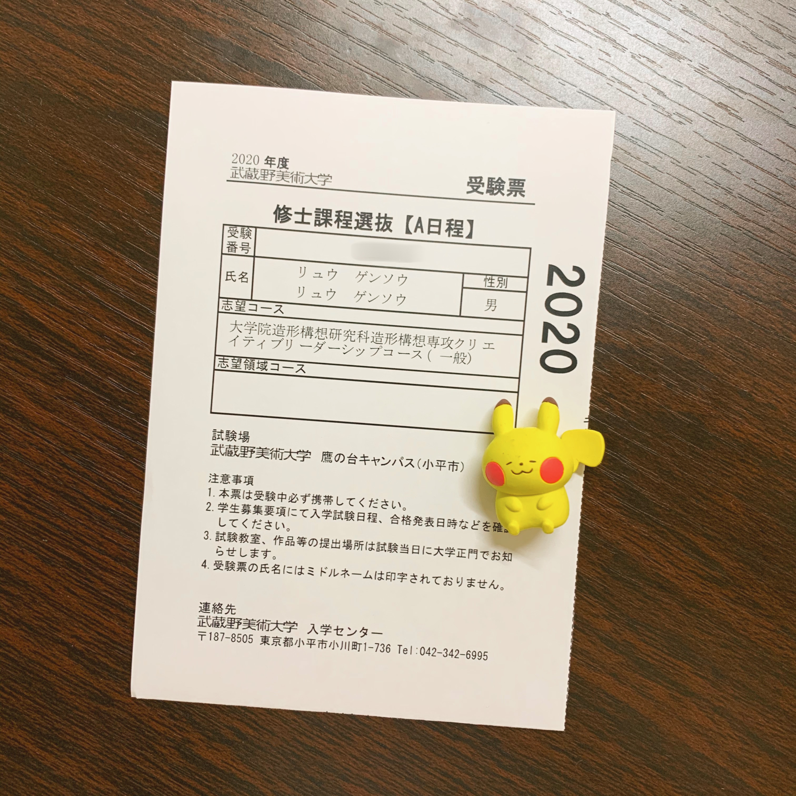
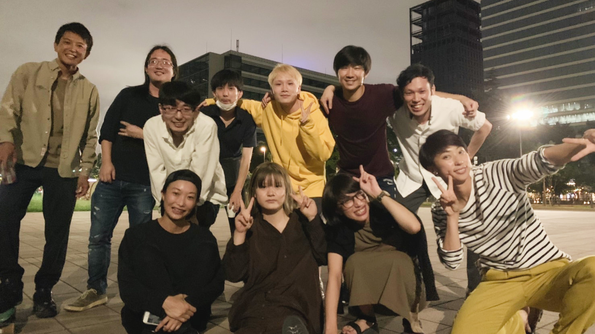

講一講日本考學和求職的心路歷程
想寫這篇文章很久了，硬是憋到了這個時間才寫XD。
我在2019年6月底去到東京，在那邊讀了一年半的語言學校，經歷過四次失敗的大學院入學考試，回國，終於在去年年底拿到teamLab的offer，3月1日遞出簽證材料，目前終於又要重新去到日本了。這大起大落的兩年讓我感觸很深，本著紀錄一下心路歷程的想法，今天終於開坑寫這篇文章。
關於我自己
高考的時候為了在家附近讀大學，填報了家附近的211的軟件工程專業，那時候並非本意，而且說實話自己也並不清楚專業到底是學什麼的，有多凶險，再加上自己數學並不好，懶，以及學校課程安排不合理等等一些看起來很像藉口的客觀原因相輔相成的結果，大學四年學得還蠻痛苦的。不過好在大一暑假的時候有去參加一個新加坡國立大學的遊學項目，那時候上的是一些關於產品經理和UX設計的課程，覺得自己還蠻感興趣，再加上自己有一點點繪畫和設計的底子，後來自己有摸索著做一本作品集出來，也算是在無所事事的大學生活中有留一些痕跡。（作品集可以在這裡參考，這一版本是在日本為了考學重新製作的，原來的版本已經被我封印了）
大三的時候其實是本著時間短效率高要去英國念碩士的心情，去考了雅思，當時還算考得不錯，其實GPA什麼的零零總總加起來可以申請英國蠻好的大學，但後來不知道怎麼地，突然想去日本念書，而且還下了雄心壯志，要轉專業去念設計專業。現在想來也真的算是自命不凡XD。（仔細思考去日本的原因，可能只是因為自己不想浪費好不容易學好的日語⋯⋯）
在日本的時候考了不是那麼硬設計方向的類似於服務設計，用戶體驗設計和啟業設計方面的方向。日本有這樣方向的大學院並不多，總體感覺來講日本的設計還是偏傳統設計的多一點，即使是在多媒體的方面，也是研究裝置藝術的教授會比較多一點。當時想著要考一個知名學校（屬於是211畢業差生僅存的自尊），就報考了武蔵野美術大学的クリエイティブリーダーシップ修士課程和慶應義塾大学的メディアデザイン研究科。兩者都是屬於一些創新領域的設計方向，對於並不是設計科班出身的跨專業考生比較友好，不過這兩個專業的考生社會人考生會比較多一點。
不過自己體感來講，日本的UX設計在自己文化中保留下來的一塊做得很好以外，目前的智能設備的體驗設計這一塊其實做得不如其他國家好，所以如果是想去日本學習這方面的考生，其實我本人是建議去其他國家XD。
在我第三次落榜的時候（淚），大學同學建議我不如和她一起去申請格拉斯哥大學，下offer快，關鍵是可以認五年以內的雅思成績。我沒掛電話就把資料全傳上去了，果不其然三天就下了offer，雖然不是想考的設計方向，但是也算是進了保險箱，結果就是第四次考試整個大躺平，連面試都沒進⋯⋯
之後就是回國上網課，本來想第二學期去英國，不過因為疫情也乾脆沒去，屬於函授大學畢業了（淚）。我媽現在就整天說你以後勢必要去格拉斯哥大學看看，不然太可惜了。
關於求職這一塊，我就不在這裡寫了，直接在下面詳細講。
考學
日本這邊求學，特別是考設計專業其實真的沒什麼安全感，這是我最大的感受。

當時拍下來的准考證
首先，日本考學是一個很漫長的過程。
先從考研本身來講。先不說那些旅遊簽證過去考試就能考上的真的天選之子，即使是聯繫教授直接進到研究室裡進行學習的，大部分也只是旁聽生（也就是日語裡面的研究生）（一些教授的研究室主頁還會直接給你講不受旁聽生，要讀我的修士或博士麻煩直接過來考）。這些旁聽生一般也會有一個學習期限，例如到了第二年正式招生的時候，如果沒有順利錄取，就不能繼續當旁聽生。
即使從國內6月畢業立刻去到日本，一般的日本大學來講，最快也是第二年的4月入學（也有學校有9月入學的日程），而第二年就能入學的同學也不多，大部分是第三年才終於考上志願校，也有倒霉鬼（我）灰溜溜回國的。所以算是時間線拉得很長，特別是當自己入學的時候，看見本科同學已經在做畢設的時候，真的感覺壓力很大。
其次，在日本會覺得非常孤獨。
不像其他國家，去到目的地認識的人，基本就是自己的本專業本研究室的同學了，所以各種各樣學習上的東西都還算是能夠分享，但是在日本，如果只是進到語言學校，大家的目標校、專業等等都不一樣，所以求學這方面，還真的沒有什麼可以分享交流的，倒是看到有同學升學走了，而自己的下一次考試還要再等半年的時候，會覺得非常挫敗。
從日本本身文化這方面講，日本是一個留學生特別容易感到孤獨的國家，特別是自己什麼都沒著落的時候。自己在剛到日本兩三個月，新鮮感逐漸過了的時候，每天語言學校放學回到家之後，會覺得很窒息，那段時間覺得自己快要抑鬱了。一個是自己在日本並沒有社交圈子，除了語言學校裡面一兩個可以聊得來的朋友以外，沒有可以經常約出來喝酒談心的朋友；二是自己過來考學，心裡是覺得自己沒有底氣去放鬆舒壓的，屬於自己給自己很大壓力。
然後，日本考研複習很多時候是摸著石頭過河。
一開始，我想著不想再花更多錢了，沒有去報補習班，結果就是複習完全沒有方向。特別是除了理工科方向的考試題目有指定科目指定範圍以外，文科和設計的筆試都基本上會有小論文，甚至有些時候只有小論文這一個筆試科目，而小論文會考到什麼完全無從知曉，只有自己到處去看其他學校考試的題目，然後自己試著寫寫。當時的感覺就像準備雅思口語part 2，只有不停地準備自己的梗，準備到時候上了考場生搬硬套。不過如果是以旁聽生身分進入研究室學習的話，可以通過前輩們入手一些複習方向和複習資料，確實是比在語言學校的同學更有方向性一些。
其次就是讓我心裡陰影了很久的面試。一般面試教授會主要圍繞proposal提問，這需要對自己的proposal有很深的認識，包括動機、研究方法等，包括研究課題到底對社會會產生什麼樣的意義。面試也有各種各樣的形式，例如武藏美的クリエイティブリーダーシップ的面試就比較孤兒，有兩個面試場，分別有三個教授，考生要在兩個面試場分別用一分鐘做自我介紹和研究計劃書的presentation，然後6分鐘答辯。第一次考試14分鐘結束之後我完全是懵的，當時日語聽力也不好，被教授問到只能答非所問。三次考試下來我覺得我得了面試恐懼症，搞得後來找工作的時候壓力極大。
開始的一年左右非常痛苦，後來我總結發現，其實根本原因是我根本不適合搞學術XD。
後來是在英國讀的授課型碩士，連畢業論文都是教授分配的課題，所以整個下來覺得自己輕鬆了不少。而日本這邊不存在授課型碩士這種東西，考進來就是要做研究的，所以考生的研究計畫就非常重要（包括研究價值和與教授的契合度）。我後來像確實是絞盡腦汁想了一些根本沒有價值的垃圾研究計畫，所以沒考上也是完全不冤。
求職
我自己體感覺得，日本求職比考學輕鬆不少（不過也有覺得很難的，這一方面可能經歷不同不好比較）。
去年八九月的時候，覺得自己並不想留在國內工作，所以先是在LinkedIn上面投了一些日本的公司，不過都沒有音訊。後來在日本工作的朋友推薦給我一個叫StudyGoWorkJapan的仲介（避嫌我就不放連結了），是仲介幫我聯繫到了日本有在海外招聘的企業，後來通過面試拿到offer的。（這類工作仲介其實不只這一家，需要的可以多參考比對）
因為自己是學計算機出身的，所以這類招聘算挺多的。並不推薦大家盲目轉碼，各種各樣的職位其實都會有需求。
沒有參加過國內公司的面試，所以沒有辦法做比較，在這裡就只講日本公司的面試。
在我的幾個面試過程中，我發現其實相比技術水平，公司更看重的是人本身和公司的契合度。
專業知識方面，在日本，公司不需要新人一進來就能造飛機，公司一般都是有新人研修的，短則幾個月，長則一兩年。所以在專業知識方面，如果有文憑背書，或者是筆試有通過，基本在面試中就是簡單的確認（從我參加過的面試來看。當然也有技術面的情況，只是我沒有碰到）。例如我有通過另一個公司的一面，第二個考核階段就是長達一個月的技術考核，公司的介紹是說他們將公司新人研修的第一個月拿出來作為這個考核，通過過程給應聘者評分，所以這一部分其實就是基礎的編碼知識以及基礎工具（命令行、git等）的使用，並不會涉及到高深莫測的算法題。
契合度方面的問題其實也是一些程式化的題目。比較各個公司的可能出現的面試問題就可以發現，其實大部分問題是相似的，例如「大學時努力的事情」，「自己的優點/缺點」，「成功/失敗談」，「為什麼想在日本工作」，「想在公司做怎麼樣的工作」，「人生最努力的一件事情」等等考察人物面的問題。
這樣的問題其實最重要的我認為是要有梗，就像考雅思口語一樣，一個故事可以套在很多問題上，講的側重點區分一下即可。我在面試之前看了油管上面非常多模擬面試的視頻，包括面試官分析怎麼樣的答案算好，怎麼樣的算離題或者答非所問的，也學了很多類似於缺點題的話術，建議可以多參考一下。
前面提到我經過四次院試失敗，整個人陷入了深深的面試恐懼症中。在仲介組織的企業聯合面試會的第一天，我面試了第一家公司，是日本老牌的自動車製造企業，在面試之前整個人已經整個抖到不行，準備的答案資料已經看不進去腦子裡了。面試之後的下午，我發郵件給仲介的姊姊詢問情況，姊姊說公司那邊還需要協調日程，但是公司對我的評價很高。
![mail][mailfromao.png]
姊姊回覆的郵件
可以說是這一封郵件拯救了快死掉的我，讓我稍微對於面試有了一點自信。後來的面試我心態輕鬆了不少，除了後來我自己辭退的選考以外，都沒有在面試上被掛過了。
生活
最後還是想來講一講日本生活的方面。
就像前面講的，日本是沒著落的留學生非常容易感到孤獨，或者自暴自棄的地方。人與人之間的距離感，不能流暢溝通的語言，比國內高出一截的物價，最重要的是自己沒辦法隨心所欲的沈重壓力，說實話都曾經讓我覺得喘不過氣。
對於這個其實我自己有一點心得體會。
第一，一定要盡可能提升自己的生活品質。我記得我剛開始去的時候，一是被電影票價嚇到，二是罪惡感，喜歡看的電影都不敢去電影院看，甚至錯過了《小丑回魂2》。後來我就覺得豁出去了，幹嘛過得這麼慘呢，一週一張電影票錢還是可以省出來的。我開始像之前一樣去電影院之後，感覺確實沒有往常那麼抑鬱了。後來我更是往家裡搬了一台Apple TV，開了Netflix和Amazon Prime，徹底放飛了（x）。把自己喜歡做的事情找回來真的很重要。
第二，想辦法融入社會。一開始還挺自負的，覺得自己日語也不算差，過年去中華街幫日本人拍照片還被當成日本人，但久了還是發現自己和這個社會格格不入。包括考學寫研究計畫，如果不能以日本人的角度來思考，那麼日本教授很難接受一篇中國思維定勢下的研究計畫，所以需要學著用日本人的思維方式來思考，其實也就是需要多和日本人交流。第二年一個同學介紹我入住他們的share house，在那裡我認識了很多年輕的日本人，和他們在一起生活讓我改變了很多我以前的思維方式，也衝擊了我一直以來的價值觀，雖然在人生所謂「進展」上，日本這一年半對我來講沒有太大意義，但是這些卻是無可替代的人生經歷。

share house的合照
可能更新但是現在先
-全文完-